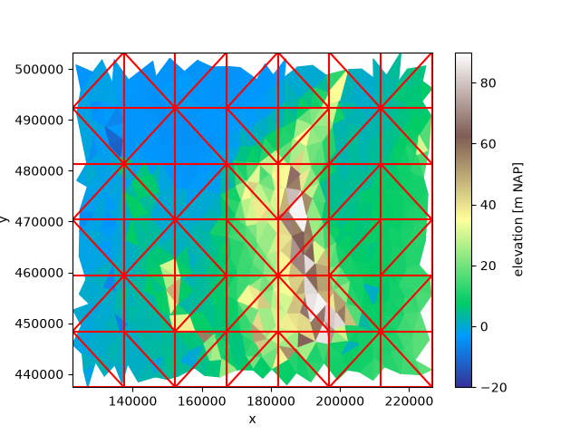
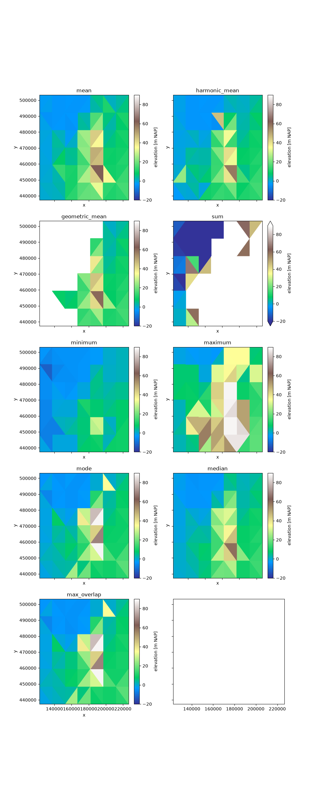
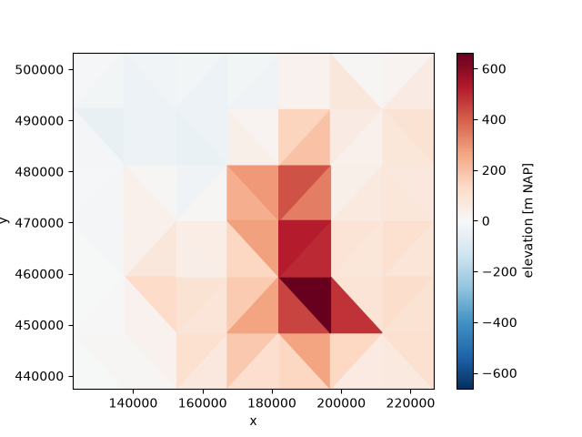
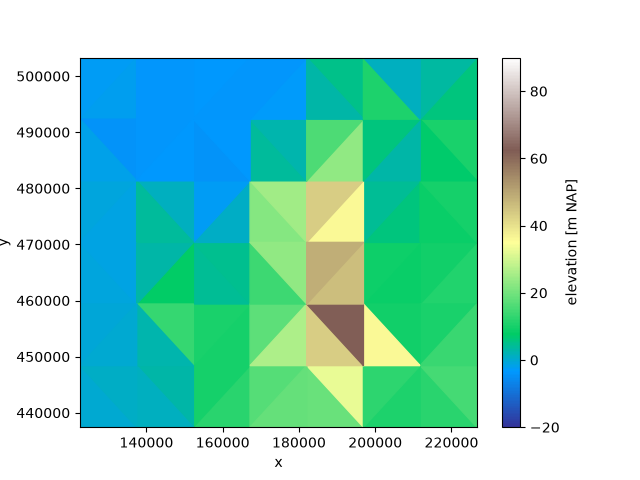
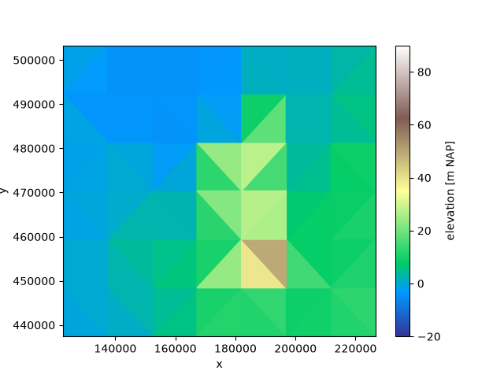

Note
Go to the end to download the full example code.
OverlapRegridder#
The overlap regridder works in two stages. First, it searches the source grid for all faces of the target grid, computes the intersections, and stores all overlaps between source and target faces. This occurs when the regridder is initialized. Second, the regridder applies the weights: it reduces the collection of overlapping faces to a single value for the target face.
There are many reductions possible. The best choice generally differs based on the physical meaning of the variable, or the application. Xugrid provides a number of reductions, but it’s also possible to use a custom reduction function. This is demonstrated here.
We start with the same example as in the quick overview.
import matplotlib.pyplot as plt
import numpy as np
import xugrid as xu
We’ll use a part of a triangular grid with the surface elevation (including some bathymetry) of the Netherlands, and a coarser target grid.
def create_grid(bounds, nx, ny):
"""Create a simple grid of triangles covering a rectangle."""
import numpy as np
from matplotlib.tri import Triangulation
xmin, ymin, xmax, ymax = bounds
dx = (xmax - xmin) / nx
dy = (ymax - ymin) / ny
x = np.arange(xmin, xmax + dx, dx)
y = np.arange(ymin, ymax + dy, dy)
y, x = [a.ravel() for a in np.meshgrid(y, x, indexing="ij")]
faces = Triangulation(x, y).triangles
return xu.Ugrid2d(x, y, -1, faces)
uda = xu.data.elevation_nl().ugrid.sel(
x=slice(125_000, 225_000), y=slice(440_000, 500_000)
)
grid = create_grid(uda.ugrid.total_bounds, nx=7, ny=6)
fig, ax = plt.subplots()
uda.ugrid.plot(vmin=-20, vmax=90, cmap="terrain", ax=ax)
grid.plot(ax=ax, color="red")

<matplotlib.collections.LineCollection object at 0x7ff9b8c151c0>
Method comparison#
Let’s compare the different reduction functions that are available in xugrid. We’ll create a regridder once for every method, and plot the results side by side.
Note
Sum and results in much higher values. The white in the figures are high values, not no data. In contrast, a geometric mean generally only makes sense for physical quantities with a “true zero”: surface elevation is not such quantity, as a datum is an arbitrary level. The xugrid geometric mean returns NaN if reducing over negative values.
functions = [
"mean",
"harmonic_mean",
"geometric_mean",
"sum",
"minimum",
"maximum",
"mode",
"median",
"max_overlap",
]
fig, axes = plt.subplots(nrows=5, ncols=2, figsize=(10, 25), sharey=True, sharex=True)
axes = axes.ravel()
for f, ax in zip(functions, axes):
regridder = xu.OverlapRegridder(source=uda, target=grid, method=f)
result = regridder.regrid(uda)
result.ugrid.plot(vmin=-20, vmax=90, cmap="terrain", ax=ax)
ax.set_title(f)

Relative overlap#
For some reductions, the relative degree of overlap with the original source cell is required rather than the absolute overlap, e.g. for first-order conservative methods, such as conductance:
regridder = xu.RelativeOverlapRegridder(source=uda, target=grid, method="conductance")
result = regridder.regrid(uda)
result.ugrid.plot()

<matplotlib.collections.PolyCollection object at 0x7ff9f9ac0a40>
Custom reductions#
It’s also possible to define your own reduction methods. Such a method is
inserted during the .regrid call and compiled by Numba for performance.
A valid reduction method must be compileable by Numba, and takes exactly three
arguments: values, weights, workspace.
values: is the array containing the (float) source values.weights: contains the (float) overlap between the target face and the source faces. The size ofweightsis equal to the size ofvalues.workspace: used as a temporary workspace of floats. The size ofworkis equal to the size ofvalues. (Make sure to zero it beforehand if that’s important to your reduction!)
Xugrid regridder reduction functions are implemented in such a way. For a example, an area weighted sum could be implemented as follows:
def mean(values, weights, workspace):
total = 0.0
weight_sum = 0.0
for value, weight in zip(values, weights):
if ~np.isnan(value):
total += value * weight
weight_sum += weight
if weight_sum == 0.0:
return np.nan
return total / weight_sum
Note
Each reduction must return a single float.
Always check for
np.isnan(value): Custom reductions methods must be able to deal with NaN values as these are commonly encountered in datasets as a “no data value”.If Python features are used that are unsupported by Numba, you will get somewhat obscure errors. In such a case,
numba.njitand test your function separately with synthetic values forvalues, weights, workspace.The
workspacearray is provided to avoid dynamic memory allocations. It is a an array of floats with the same size asvaluesorweights. You may freely allocate new arrays within the reduction function but it will impact performance. (Methods such as mode or median require a workspace.)While we could have implemented a weighted mean as:
np.nansum(values * weights) / np.nansum(weights), the function above is efficiently compiled by Numba and does not allocate temporary arrays.
To use our custom method, we provide it at initialization of the OverlapRegridder:
regridder = xu.OverlapRegridder(uda, grid, method=mean)
result = regridder.regrid(uda)
result.ugrid.plot(vmin=-20, vmax=90, cmap="terrain")

<matplotlib.collections.PolyCollection object at 0x7ff9f9a7f980>
Not every reduction uses the weights and workspace arguments. For
example, a regular sum could only look at the values:
def nansum(values, weights, workspace):
return np.nansum(values)
Custom percentiles#
Xugrid provides a number of predefined percentiles (5, 10, 25, 50, 75, 90, 95). In case you need a different percentile value, you can use this utility:
p333 = xu.OverlapRegridder.create_percentile_method(33.3)
Then, provide it as the regridder method as above:
regridder = xu.OverlapRegridder(uda, grid, method=p333)
result = regridder.regrid(uda)
result.ugrid.plot(vmin=-20, vmax=90, cmap="terrain")

<matplotlib.collections.PolyCollection object at 0x7ff9fa8f7980>
Total running time of the script: (0 minutes 3.536 seconds)